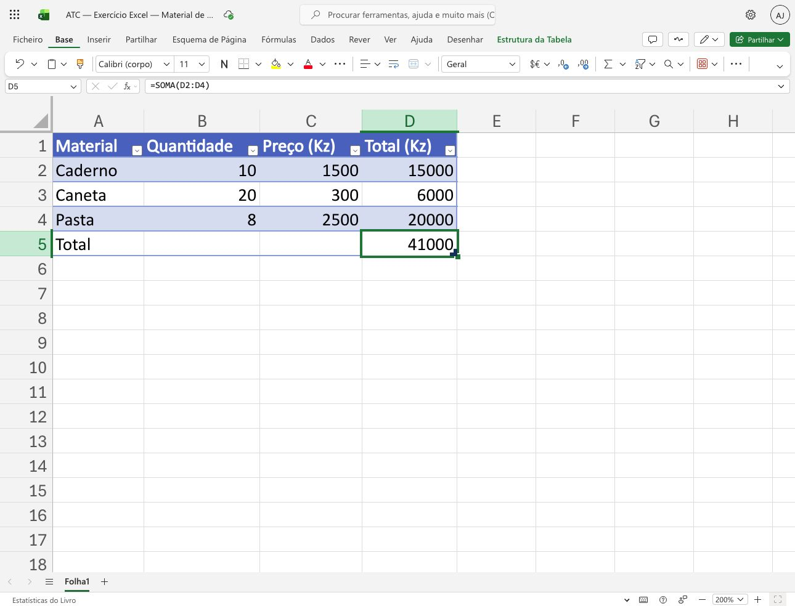
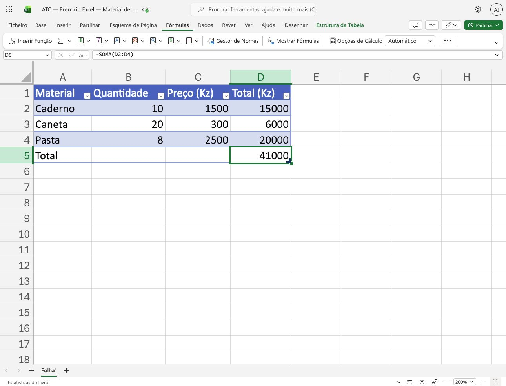

ATC · EXEMPLO 01Ler uma tabela de materiais
A folha ATC regista quantidades, preços e totais em kwanzas.

Captura própria ATC · Microsoft Excel para a Web · Português (Portugal). Used with permission from Microsoft.- Identifique os cabeçalhos Material, Quantidade, Preço (Kz) e Total (Kz).
- Selecione D5, a célula do total.
- Compare o valor 41 000 com a fórmula apresentada na barra de fórmulas.
Verifique: A célula D5 contém =SOMA(D2:D4) e apresenta 41 000.
ATC · EXEMPLO 02Localizar a Soma Automática
O separador Fórmulas reúne funções para calcular resultados.

Captura própria ATC · Microsoft Excel para a Web · Português (Portugal). Used with permission from Microsoft.- Abra o separador Fórmulas.
- Localize Soma Automática, identificada pelo símbolo Σ.
- Ao praticar numa célula vazia, confirme sempre o intervalo proposto antes de premir Enter.
Verifique: Nesta captura, o cálculo já está concluído; o separador mostra onde encontrar a função.